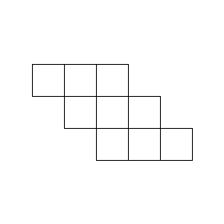

Pipelining

In this set of notes, the concept and various implementations of instruction pipelining are presented. Instruction pipelining, often simply referred as pipelining, is a performance enhancing technique first appeared in electronic computers around the early sixties in commercial projects such as the IBM 7030 Stretch being one of the most notable ones. It was then heavily adopted in the late seventies in supercomputers, such as the Cray-1 and later on CISC oriented machines in the mid-eighties.
Contents
- Baseline
- Concept and application
- Dependencies & hazards
- Data dependencies
- Control dependencies
- Structural dependencies
- Hazard handling example
- Forwarding misfires
- Variants
- Variable-length instruction fetching
- Event handling and exceptions
- Closing remarks
1. Baseline
The following is a high-level diagram of a simple RISC-like processor microarchitecture without pipelining, which will serve as the baseline throughout this and subsequent set of notes.

The baseline operates on the following assumptions:
- Instruction memories, data memories and registers are all asynchronous-read and synchronous-write.
- All instructions take 1 cycle to resolve (no multistep or microcode).
- All instructions have a fixed length.
- The instruction memory is read only.
- Control-flow instructions perform absolute jumps.
In this basic microarchitecture, each instruction goes through the usual processing phases: fetch, decode, execute, memory access and write-result all in a single cycle, thus resulting in an IPC (instructions-per-clock) of 1. The clock period, however, must be long enough to allow the execution of all the phases in a single cycle, effectively placing all the circuitry in series with one another, resulting in a long combinatorial path. This is a major performance bottleneck, which can be significantly improved, by implementing instruction pipelining.
2. Concept and application
To understand the general concept of pipelining, we can take a look at a car production pipeline as an example. In order to build a car, we have to put together a series of components such as: the engine, clutch, transmission, the chassis, suspensions, wheels and many more. In a hypothetical scenario, let's say that building a single car takes 1 day. The production flow might be something like the following:
- Build the chassis.
- Paint it.
- Mount the engine.
- Mount the transmission.
- Mount the clutch.
- Mount the suspensions.
- Mount the interiors.
- Mount the wheels.
- Done.
If those steps are executed in series and no new car can be built until the current one is complete, then it's easy to see that the throughput of the production line is 1 car per day. In reality though, it's possible to have multiple cars being built on the same production line because once the chassis of car X has been built, it will move to the painting step. This means that the equipment for building chassis is sitting idle when it could be building the chassis for the next car X+1. Since all steps are independent, we can apply this logic to all production stages, which allows several cars to be built in "parallel" with each in a different stage.
With this, the time it takes to build a single car stays the same, but the throughput increases by the number of stages that the production line has: 8 times in this example, so 1 car every 3 hours. When a car exits the production line, soon another one that was one stage behind completes and exits the pipeline. In short, this technique exploits "temporal" parallelism by reutilizing as much of the already existing equipment as possible.
This concept can be applied to logic circuits too, including CPUs because instructions go through different independent steps just like the car production line example. In order to make the processor pipelined, we need to divide each step boundary with a pipeline register creating a single pipeline stage. This register is a single line of d-type flip-flops that stores the result of the stage associated to it, this way, the stage is free to handle the next input without losing information. These registers are placed at the end of each stage forming something that vaguely resembles a gigantic shift-register.
Just like the car example, the time it takes to execute a single instruction is the same (in reality though, it's slightly longer due to the pipeline registers which add small delay due to their setup and hold times). However, it now becomes possible to drastically decrease the clock period because the amount of "work" that needs to be done per stage is much lower, thus increasing the overall throughput of the processor.
An important observation is that, even though the processor executes multiple instructions per cycle, those instructions are all at different stages which has no effect on the overall IPC, which stays at 1, like the initial non pipelined version. We can prove this intuitively by calculating the number of cycles it takes to execute a program composed of 1 instruction, then one with 2, then one with 3 and so on. For example, assume that the pipeline has 5 stages: fetch, decode, execute, store and writeback:
- 1 instruction: 5 cycles (IPC = 0.2).
- 2 instructions: 6 cycles (IPC ~ 0.33).
- 3 instructions: 7 cycles (IPC ~ 0.43).
- 4 instructions: 8 cycles (IPC = 0.5).
- 1000 instructions: 1004 cycles (IPC ~ 1).
The more instructions are executed, the closer the IPC approaches 1 and, since programs execute billions of instructions, the IPC very quickly reaches 1. Basically, the number of cycles it takes to fill the pipeline gets amortized more and more, the longer the pipeline runs.
3. Dependencies and hazards
Up until now, we have assumed that instructions are independent of one another and this assumption has been the foundation that allows pipelining to work. In reality, however, this is not really true... and it's a big problem because it can, in the best case, lead to degraded performance and in the worst case to straight-up incorrect execution. To understand why dependencies between instructions can cause issues, we firstly have to define what exactly they are. Dependencies are divided into three main categories:
- Data dependencies.
- Control dependencies.
- Structural dependencies.
It's important to note that dependencies are a property of a program and not of any particular microarchitecture, pipelined or not. On a given microarchitecture, however, such dependencies can lead to incorrect execution and, when they do, it's referred to as a hazard and they must be avoided and/or handled in order to properly execute any given program.
There are 3 broad ways of handling a hazard in a pipeline:
- Stalling: all the stages before a certain desired one
Xwill not advance, while all the stages fromXand after will proceed normally. This is primarily used to fix timing related issues, and it's a technique that is performed by the hardware itself when appropriate, usually after other handling techniques cannot be applied. At the boundary ofXandX-1a "bubble" (no-op instruction/s) is injected, which will travel along the whole pipeline to pad the execution for the desired number of cycles. - Flushing: the instructions in the desired stages are "flushed", that is, transformed into no-ops to avoid executing them. This is primarily used to eliminate instructions that have been erroneously ingested, or that might need cancellation due to an event, like an interrupt or an exception. Similarly to option 1, this technique creates a bubble that travels along the whole pipeline lowering performance.
- Forwarding: feed the result of a previous instruction to a subsequent one, before the result is written into the destination register or memory. This technique will be explored in more detail in the next section.
3.1. Data dependencies
Data dependencies, at a high level, define how the data flows through the program and dictate how it computes. They can be further divided into three subcategories:
- RAW (read-after-write) dependencies. These are also sometimes called true dependencies or flow dependencies because they define how the program computes and manipulates data, in other words, how the data flows. They cannot be removed and must always be obeyed.
- WAW (write-after-write) dependencies. These are also sometimes called output dependencies because they specify what should be the final value of something. For register-to-register dependencies, these often exist because there is only a limited number of registers available to hold data.
- WAR (write-after-read) dependencies. These are also sometimes called anti dependencies because it can be thought as the reverse of the RAW dependency.
For this class of dependencies, we will use register-to-register cases for illustrative purposes as it's simpler to reason with them, but they are not exclusive to registers. It's entirely possible to have data dependencies between register and memory operations and even between memory operations themselves, but the underlying logic is always the same. Take the following code snippet as example:
There are 3 data dependencies in this snippet: a RAW from line 1 to 2, a WAW from line 1 to 3 and a WAR from line 2 to 3, all targeting register 1. The RAW dependency is present because the SUB must wait for the ADD to finish before it can go, because one of its inputs depends on the result produced by the ADD. The WAW dependency is present because the program demands that the last value of register 1 should be the one produced by the MUL. In this specific example, the MUL and the ADD could swap places without affecting execution, but this is only a simple snippet and in a real program the MUL might feed subsequent instructions. It's easy to see now why the WAW dependency is also called output dependency, and it's because it dictates what the last output of a particular variable (register or memory location) should be. Finally, the WAR dependency exists because the MUL should not be allowed to overwrite register 1 before the SUB has finished reading it, because that would lead to incorrect execution of the program.
In short, data dependencies dictate what orderings of instructions are legal.
3.1.1. Handling data hazards
As mentioned earlier, dependencies can potentially transform into hazards on microarchitectures that go beyond the baseline defined at the beginning. For simple in-order scalar microarchitectures, that is, microarchitectures that execute instructions strictly in program order and process a single instruction per stage, the RAW dependency is the only relevant one. The WAW and the WAR are automatically satisfied by the pipeline itself, simply because it executes 1 instruction at a time in the order that they appear in the program. To see this, refer to the previous snippet: The WAR on the MUL doesn't lead to issues because the MUL will always execute after the SUB, and the same can be said for the WAW.
To understand how the RAW hazard can manifest itself in a simple pipeline, we can take the naive 5-stage pipelined microarchitecture presented earlier and try to execute the code snippet above. We run into a problem... when the ADD is in the execute stage, the SUB is in the decode stage, which means that it's also reading the registers. This is problematic as the SUB will latch the old value of register 1 at the end of the cycle before the ADD had a chance to save its result. In fact, this issue will persist even with two independent instructions in the middle of the ADD and the SUB. With a separation of 3 or more cycles, the hazard is automatically resolved because the SUB will be in the fetch stage (or not even in the pipeline at all) when the ADD is writing the result into the register file. There are 4 different ways to handle this situation each with its positive and negative aspects:
- Place no-op instructions between the ADD and the SUB at the program level. This requires no changes to the hardware, but it severely lowers performance and the program will be microarchitecture-dependent instead of just ISA-dependent, which is also a severe compatibility drawback. This is basically option 1 from the broad way of handling hazards list, but implemented in software. The hardware doesn't physically stall the pipeline, because the program already injected no-ops when appropriate.
- Reorder independent instructions to fill the gap. Better than option 1, but it still has the same compatibility drawback as the first option and is not always practical to perform. Compilers have a limited "window" of instructions that they can examine, and they might not find any instruction suitable for reordering.
- Inject no-op instructions between the ADD and the SUB at the hardware level. This requires changes to the hardware because the processor must be able to detect when a RAW hazard is going to happen and that might slow down the critical path. It's still suboptimal for performance, like the first two options, but it solves the compatibility drawback. This is an example of the option 1 from the broad way of handling hazards list.
- Forward the value produced by the ADD directly into the execute stage without waiting for the write event to the register file or injecting any no-op. This is the best option as it has no performance impact (when applicable) and, like option 3, it has no compatibility drawbacks. It requires, however, significant hardware changes and may slow down the critical path.
3.1.2. Forwarding
Forwarding is a technique that consists in feeding the dependant instruction the result produced by an earlier instruction X before X has written the result into the register file (or other stateful components). To do this, the CPU needs to detect when a conflict will happen between two instructions and "bypass" the correct result to the appropriate stage. In practice, forwarding implementations consist of:
- Forwarding-unit: a dedicated hardware structure, usually placed in the decode stage (the stage where registers are also read), that compares the source registers of the instruction in the decode stage, with the destination registers of earlier instructions in order to activate the various bypass paths.
- Bypass multiplexers: multiplexers that feed the correct value to the desired functional units. With the 5-stage pipeline as the example: either in the execute stage to the ALU, and/or to the data memory inputs.
- Bypass buses: paths that feed the stage result back to the bypass multiplexers.
- Stall logic for when forwarding cannot be applied. This logic effectively injects no-ops, creating a pipeline bubble, delaying and padding execution until the time is right to use forwarding.
3.2. Control dependencies
Control dependencies define the control-flow of the program itself and they arise from control-flow instructions, such as conditional branches, jumps, function calls and function returns. This is because every time the program executes an instruction that changes the control-flow, all subsequent instructions become dependent on it. To complicate things further, branches cause the processor to conditionally execute blocks of code depending on the condition that it checks, which causes a hazard only when the condition is true. To see more clearly, take the following snippet as example:
Either lines 1 through 4 or line 44 onwards are executed depending on if register 1 and 2 are equal. This can be problematic because if the branch condition is true, then the pipeline might potentially be filled with the instructions from the wrong path. In that case, the erroneous instructions must be flushed by using the option 2 from the broad hazard handling list. If the branch condition is false, however, then those instructions are indeed the correct ones and no hazard is generated.
To flush the erroneous instruction, all that is needed to do is to block such instructions from altering any stateful component, for example, by injecting a "write-disable" bit into the stages. Doing so, will effectively transform those instructions into no-ops, thus creating a pipeline bubble.
Simply put, every time an instruction causes the program-counter to not go to the next instruction, but to jump somewhere else, it will generate a control hazard.
3.2.1. Handling control hazards
There are different solutions for handling this type of hazard, many of which are similar to what we saw earlier for data dependencies:
- Place no-op instructions after every branch at the program level. This option does not require any hardware changes, but it severely lowers performance and the program will be microarchitecture-dependent instead of just ISA-dependent, which is also a severe compatibility drawback.
- Inject no-op instructions after every branch at the hardware level. This requires changes to the hardware because the processor must be able to detect a potential control-flow change during the fetch stage. It's still suboptimal for performance, like the first option, but it solves the compatibility drawback.
- Reorder instructions to fill the gap at the program level. The pipeline has a number of stages before the EX stage, which is usually where the control-flow instructions are resolved. Those stages, also referred as delay slots, can be filled with instructions that come after the control-flow instruction and will always be executed unconditionally. This strategy has two drawbacks: one is the compatibility issue that options 1 and 2 have, the other is that it's not always practical or possible to find suitable instructions to fill the delay slots.
- Speculation: implement circuitry that tries to predict what the outcome of a control-flow instruction will be, in order to minimize the chance of getting the hazard.
3.2.2 Delay slots
The following is an example of the branch delay slot filling strategy mentioned above. The first snippet uses the first option, while the second is rewritten by taking advantage of the delay slots:
The two snippet implement a very simple C-like string length calculation (in this example it also includes the null-character in the length). They are composed of a loop that loads a byte from memory at the address referenced by register 2 into register 1. They then increment the appropriate counters and finally check if the fetched character is the null-character with a "branch if not equal" instruction (assume that register 0 is a constant value of 0, which is what the null-character is). If the condition is true, then the loop hasn't reached the end and continues, otherwise it exits. The second snippet replaces the NOP instructions with the ADI ones while keeping the overall behavior unchanged. As explained, this is because the 5-stage pipeline has 2 cycles worth of delay slots, therefore, by the time the branch is resolved, the ADI operations are in the pipeline and will always execute unconditionally.
3.2.3 Speculation
Speculation, also called branch prediction when it comes to control-flow, is the best way of handling control-flow dependencies, and it's what modern processors employ. It doesn't guarantee to completely eliminate them (as that is practically impossible as that requires knowledge of the future), but it will reduce the chance of a hazard, and thus, the performance penalty associated with it without modifying the program. There are many ways of implementing this option, and they will be explored in detail in subsequent sets of notes, but for now, the simplest approach is to implement the "always-not-taken predictor", which simply keeps fetching the next instruction normally and flushes when the hazard happens.
3.3. Structural dependencies
Structural dependencies are an extremely pervasive type of dependency and exist any time an instruction uses a "resource", which can be things like a functional unit like an ALU, register read/write ports and other things. This type of dependency does not usually result in a hazard for simple pipelines such as the ones presented here. They can be problematic in more advanced CPUs that execute many instructions per stage, for example: in a pipeline that executes 4 instructions per stage (4-wide), there might be 4 ALUs, but maybe only one divider. If there are 2 or more divide instructions that can be executed in parallel, then a hazard might arise simply because there is only one divider available. A similar issue can present itself when it comes to register read and write ports: a CPU that can execute many instructions per stage, must also have a register file that allows reading many operands concurrently, which is expensive in terms of chip area and power. As an example a 4-wide pipeline might have a register file with 8 read ports and 4 write ports. This CPU might also support instructions that read 3 operands instead of the standard 2, which would require a total of 12 read ports in the worst case. This is over the limit of 8, so a structural hazard will occur in this case, resulting pipeline stalls.
There isn't really a solution to this type of dependency, other than to equip the pipeline with enough resources to give good performance under a variety of different conditions.
3.4. Hazard handling example
The above example diagram is a processor pipeline with an extensive and aggressive forwarding approach and the basic "always-predict-not-taken" branch predictor. There are several forwarding paths, which cover all possible cases:
- Register-register cases: all handled via the bypass multiplexers on both ALU inputs in the EX stage. Two are required because classic RISC-like architectures employ 3-operand instructions that read up to 2 sources. The bypass multiplexers are controlled by the forwarding-unit via outputs fwd-2 and fwd-3.
- Memory load to memory load: the only possible dependency is on the address, that is, the first operation loads a value from memory that will be used by the second operation as part of the address calculation. In this case, it's not possible to forward without stalling because when the second load is calculating the address with the ALU, the first one doesn't even have the value yet. The solution is to stall the IF, ID and EX stages for 1 cycle to allow the first load to proceed. After that, it's possible to use the already present bypass paths to forward the correct value to the second load.
- Memory load to memory store (on data): handled via the bypass multiplexer on the data-in input in the memory stage, controlled by the fwd-1 on the forwarding unit. This hazard can also be partially solved without the additional bypass path, but requires stalling the IF, ID and EX stages for 1 cycle when the store is in the EX stage.
- Memory load to memory store (on address): same case as 2.
- Memory load to register instruction: same as case 2.
- Register instruction to memory load: same as case 1.
3.4.1. Forwarding misfires
To avoid forwarding on inappropriate instruction sequences, the forwarding unit has 3 "inhibit" inputs taken from the EX, ST and WB stages. This is to avoid forwarding bogus data from instructions that don't actually produce a result, like control flow instructions. This "misfire" might happen due to the raw instruction encodings:
The first instruction format might encode for a JMP instruction and the second one for an ADD instruction. If the program has the following sequence of instructions:
A naive forwarding unit will incorrectly issue a forward on the src1 for the ADD, which would be incorrect. This is because the forwarding unit simply compares for equality fixed bits from the incoming instruction.
3.4.2. Variants
The register file chosen in the example diagram is a standard one and does not implement "data flow-through". A simple d-type flip-flop will return the new value that is being written, only after the strike of the clock. A d-type flip-flop with flow through will always present the new value that is being written instead.
This variant is useful because it automatically integrates the bypass path from the writeback stage (in pink in the previous diagram). However, it usually increases the complexity in the register file, which may worsen the critical path.
4. Variable-length instruction fetching
All previous examples have assumed that the processor ISA has fixed-length instructions, which plays very nicely in a pipeline, and it's a strong point in favor of such ISAs. In fact, historically in the early days, RISC-like ISAs only contained fixed-length instructions because it makes implementing a pipeline much easier. However, while pipelining a variable-length ISA is not an impossible task, it does require extra hardware to do it efficiently.
There are two main issues when it comes to variable-length instruction fetching:
- How to get the next instruction address without waiting for the ID stage.
- How to handle misaligned accesses in the instruction memory itself.
To solve the first issue, the simplest way is to always fetch the biggest instruction size and ignore any unwanted byte in the ID stage. To go to the next instruction, the IF stage has to decode enough of the instruction to know its size, and use that to increment the program-counter.
With the diagram above, it's easy to see why fixed-length instructions are trivial to fetch. That is because the length is always the same, and therefore, the program-counter will always be incremented by a fixed amount (4 bytes in the example). For variable-length, always fetching the largest possible instruction size can cause the IF stage to fetch more than necessary. In the simplest implementation, as depicted in the diagram, the extra bytes are simply ignored and the program counter is advanced by the size of the currently fetched instruction.
To solve the second issue, we need a memory that can actually fetch misaligned instructions. To better show the issue, take the following diagram and assume 4-byte instructions:
In the aligned case, each instruction neatly falls into each square, allowing the memory to simply read the whole line and then select the desired chunk with the output multiplexer, but for the second case, that isn't enough. To read the instruction 5, the memory needs to read both lines and merge the correct chunks together via an alignment-network right before the output multiplexer. This is the hardest case to handle, but it only happens if the instruction address is 2 less than the length of the whole line, 14 in this case. In all other misalignment cases, the larger instruction is split among consecutive blocks of the same line. This is easier to fix, as it only requires selecting the correct blocks, then concatenate them, and finally, shift them all the way to the left.
Overall, this "over-fetch and discard" approach is simple and doesn't result in pipeline bubbles or stalls, but it's inefficient because it's overly aggressive. A better, but significantly more complex approach, would be to buffer the additional bytes. To implement this strategy, we would need a hardware buffer that is similar to a queue which is always filled with a fixed amount of bytes each time (4 if we refer to the earlier example as it's the largest instruction size), but drained by a variable number of bytes (2 or 4, in this example). This technique will be explained in more detail in subsequent sets of notes as it's useful for more advanced microarchitectures.
5. Event handing and exceptions
In a pipelined processor, interrupts and exceptions require additional hardware to be handled properly and, in practice, it's useful to model these events as control-flow instructions that are injected at the time of the event.
5.1. Interrupt handling
Interrupts are events that are generated externally (also referred as "asynchronous") and can arrive at the CPU at any time. This can be problematic in pipelines because instructions are no longer executed in a literal single cycle, and changing control-flow immediately can lead to unintended behavior. For example, if an interrupt is triggered when there is a control-flow instruction being processed in the pipeline, it can erroneously re-direct the program-counter back out of the interrupt handler routine. With this in mind, we can define two broad strategies for properly handling interrupts:
- Cancel all in-flight instructions currently in the pipeline. This is the easiest strategy to implement and simply requires injecting the "nullify" bit into all stages, effectively flushing the pipeline completely. The advantage of this option is that the processor can begin handling the interrupt the very next cycle. The disadvantage is that, because the pipeline is flushed completely, the processor has to re-execute the lost instructions when returning from the interrupt handler.
- Make the interrupt wait: to do this, the instructions already present in the pipeline will finish normally, but no new instruction will be ingested until the pipeline is fully empty. This can be done by injecting no-ops for
Namount of cycles whereNis the number of pipeline stages (an optimization could be, only the number of delay-slot stages). Once the last bubble has been injected, the interrupt is allowed to trigger the jump to the handling routine. This strategy has the advantage that no currently executing instruction is destroyed, leading to a lower loss of throughput. The disadvantage is that it's more complex to implement, and the handling latency of the interrupt increases proportionally to the number of stages of the pipeline.
One thing to note for the second strategy, is that if instruction 4 in the diagram above is a control-flow instruction, it must be allowed to change the program-counter, because it will be saved by the interrupt the next cycle. This way, the handler can return to the next instruction after 4, which might be 5 or something else.
5.2. Exception handling
Exceptions are events that are generated internally (also referred as "synchronous") and will, generally, manifest themselves somewhat predictably. An example of an exception, is an arithmetic divide-by-zero error, which happens when the divisor of the operation is 0. In this specific case, since the exception is raised in the EX stage, it will be very similar to a jump or a taken branch instruction. In fact, it's possible to treat these cases in the exact same way as regular control-flow instructions as far as the pipeline is concerned. If an exception can be raised in a different stage X other than EX, then all the instructions before X must be cancelled.
6. Closing remarks
Instruction pipelining is a complex topic that has many intricate details, rules and exceptions. The point of this writing is to lay down the basics and some of the most notable issues and solutions. This space is dedicated to some additional remarks.
Is the read-after-read (RAR) dependence a thing?
No, not in the "usual" way. That's because two instructions that read the same thing without anyone else interfering, can be reordered without resulting in incorrect execution. Instructions that have side effects, such as modifying one of the source registers (or some other stateful resource) can be modeled as a hidden RAW dependence.
There are more complex and obscure dependencies, that don't have a dedicated name, but they involve CPUs with multiple cores, caches and Out-of-Order execution. Those techniques, when combined, can result in some nasty behavior in certain cases (which will be explored in subsequent sets of notes).
What about self-modifying code?
That is another issue... in the proposed examples, the instruction memory is treated as a ROM that cannot be changed, which renders this question moot. However, if we did allow this feature, the proper way of modeling this would be with a RAW dependence on the instruction memory itself. Since self-modifying code is not something that happens very often (from the point of view of the CPU itself), it's fine if no-op instructions are placed after the modifying operation to resolve the hazard. Alternatively, but it's a bit excessive, it would be possible to have a bypass path from the instruction memory in the ST stage into the input of the control unit, thus, eliminating the need for the no-ops.
How many stages should a pipeline have?
Not an easy question to answer as it depends (as always). A picture is worth a thousand words:
Performance gains become smaller and smaller because the time that the pipeline registers take to latch the values becomes more and more dominant. At the same time, more stages means more hazards and a higher clock speed means higher power usage.
In the end, hard to say. There have been CPUs with very deep superpipelines (when a pipeline has "a lot of stages", it's usually called superpipeline) such as the final revision of the Pentium 4 (Caedar Mill) with 31 stages. More modern CPUs have fewer stages, for example, Intel's Kabylake had 14.
The most appropriate answer, I would say, is to aim for the least number of stages required to achieve the desired clock speed.
Are pipeline stages actually balanced?
Up until now, we have assumed that all stages in a pipeline take the same amount of time to perform their function, but this is rarely the case... usually the clock speed will be tailored for the slowest stage, but it's possible to "rebalance" the stages a bit, by using clock offsets. If a stage A takes 10ns to complete and B takes 8ns, it's possible to delay B by 1ns, balancing both stages at 9ns. The reason why this works, is because A timings "spill over" to the next stage by 1ns, allowing it to run "late", while B is fast enough to recoup the deficit.